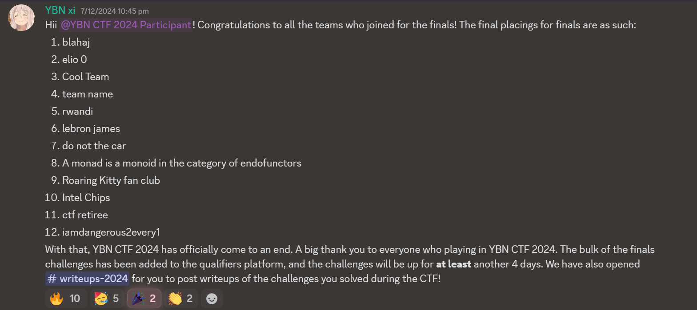

Achievements

BlahajCTF 2024
First time qualifying for physical finals of an online contest
While I technically participated in a team of 4, due to their circumstances the other 3 were only able to score around 2% of our total points, so I hacked away for almost a day straight and managed to qualify for the finals as the only secondary school team (to my knowledge). It was definitely a challenge playing essentially solo as a secondary schooler against teams of JC and polytechnic students, but it was a fun experience nonetheless (and I'm happy I even qualified honestly).
